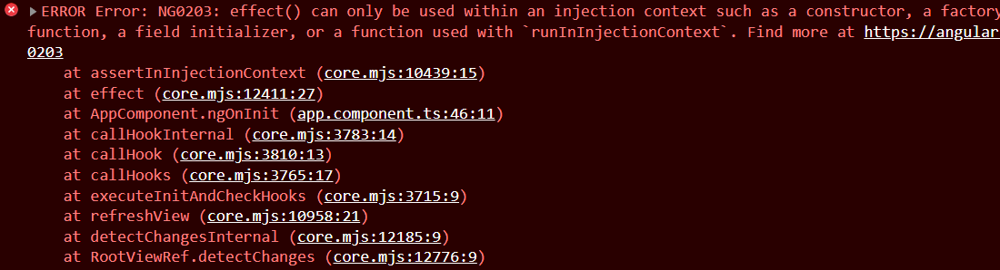
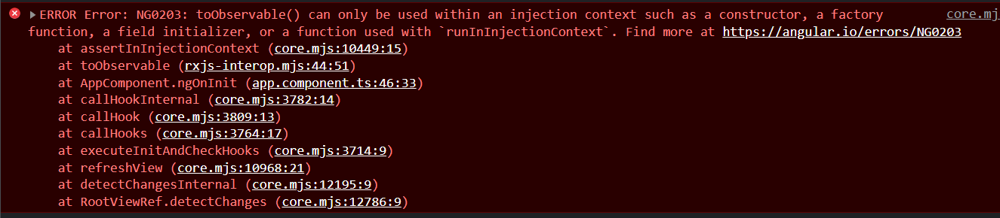

Angular 嘗試在下一世代中加入新的 reactive 機制，試圖找到取代 zone.js 的方式，因此引進了 signals 來試試看是否能成為下一代 change detection 的選擇。想要嘗試的朋友可以安裝 angular cli v16 的版本
什麼是 Signals
Signals 不是 Angular team 創造出來的 library，而是引用其他 framework 內所有使用的一個機制，如果沒記錯應該是來自 SolidJS
Signals are the cornerstone of reactivity in Solid. They contain values that change over time; when you change a signal’s value, it automatically updates anything that uses it.
說是這樣子說，Angular Team 是自己實做整個 Signal 機制，相關的程式碼連結我會附在下面
如何在 Angular 內使用 Signals
建立 signal 物件
1 | import { Component, signal } from '@angular/core'; |
signal 介面
1 | function signal<T>(initialValue: T, equal?: ValueEqualityFn<T>): SettableSignal<T> |
顯示
要取得 signal 物件值的方式很直接，直接當 function 使用即可，接續上面的範例
1 | {{ count() }} |
這樣就可以在 html 上顯示 count 的值了，或許會問不要在 html render 時寫 function call 嗎，會有效能問題，這裡這樣使用是沒有問題的 (之前有聽 angular team 說為什麼不會有問題，但我忘記理由了)
更新
當建立一個 signal 物件後，更新值得方式有三種，set 、update 和 mutate
-
set: Directly set the signal to a new value, and notify any dependents.
1
set(value: T): void;
-
update: Update the value of the signal based on its current value, and notify any dependents.
1
update(updateFn: (value: T) => T): void;
-
mutate: Update the current value by mutating it in-place, and notify any dependents.
1
mutate(mutatorFn: (value: T) => void): void;
範例
1 | import { CommonModule } from '@angular/common'; |
進階用法
開頭有提到 signals 是一個 reactive library，當然不會只有這種單一值的使用情境，一定會有錯綜複雜的使用情境，這時候會怎麼使用呢
1 | import { Component, signal, computed } from '@angular/core'; |
computed 可以讓我們與其他 signal 作互動結合，當 computed 內的 signal 值改變時，此 computed 結果也會跟著改變，使用上算直覺
1 | export declare function computed<T>(computation: () => T, equal?: ValueEqualityFn<T>): Signal<T>; |
除了 computed，還有一個是 effect
1 | export declare function effect(effectFn: () => void): Effect; |
須留意的是兩者回傳的物件是不一樣的，computed 會回傳一個新的 Signal 物件，但 effect 是回傳一個 Effect 物件，這 Effect 型別的物件可以允許我們停用 effect ，類似 Observable.subscribe 會回傳 subscription 的概念
1 | constructor() { |
這邊要留意的是 effect 宣告的地方跟 inject() 是一樣的，只能在 constructor 宣告，不然會噴錯誤訊息給你看

RxJS 怎麼辦?
Signal 的使用方式與 RxJS 其實有很大部分是重疊的，但 RxJS 有很好用的 operators，這時候該怎麼辦呢? 是否有方法能結合兩者。在 GitHub 上面有一個 PR 就是要解決這個問題，Angular team 提供兩個 function，toSignal 和 toObservable，這過這兩個 function 可以將 Observable 和 Signal 物件做彼此轉換，我是覺得這樣就可保留相當的彈性了，當然也要等實際使用在產品才能知道會有那些坑
[Update] Angular v16.0.0-next.6 實做了 fromObservable 和 fromSignal 兩個方法，想玩的朋友可以更新到新版
附上範例程式
1 | // toObservable |
宣告的位置跟 effect 是一樣的，不然也會噴錯誤訊息給你享用
